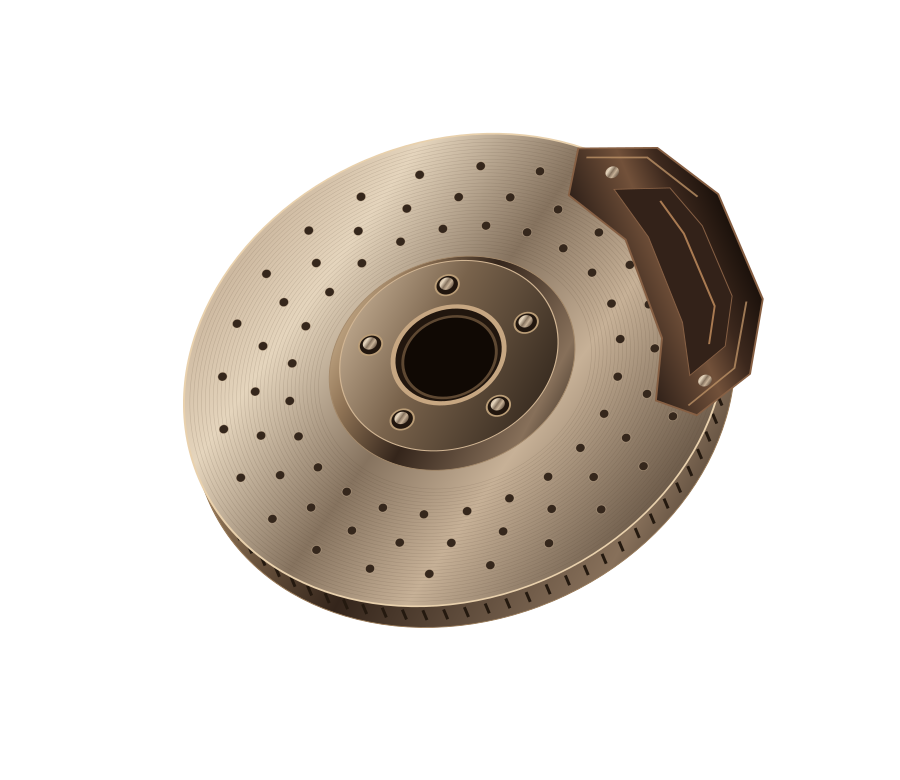

Software para talleres mecánicos / V.01
CADA PARTE.
EN SU LUGAR.

a la última entrega.
Tu experiencia mueve el taller.
Nosotros ponemos la información en orden.
EL TRABAJO ES TUYO.
EL ORDEN, TAMBIÉN.
Una sola vista para entender qué llegó, qué sigue en reparación y qué está listo para salir.
Cada servicio
tiene una historia.
Registra la falla, asigna al mecánico y conserva el diagnóstico, las reparaciones y las piezas utilizadas en cada orden.
Abrir mi espacioNINGÚN SERVICIO
SE PIERDE DE VISTA.
Cinco etapas. Una historia completa.
El avance del trabajo siempre está separado del estado del pago.
- 01
Recibido
Cliente, vehículo y falla reportada. El servicio comienza con la información correcta.
- 02
En diagnóstico
El mecánico revisa el vehículo y registra lo que encuentra.
- 03
En reparación
Trabajos, mano de obra y refacciones, dentro de la misma orden.
- 04
Listo para entregar
La reparación está documentada. Recepción puede preparar la entrega.
- 05
Entregado
El vehículo vuelve al cliente. Su historial y cualquier saldo pendiente permanecen disponibles.
HECHO PARA EL TRABAJO DE CADA DÍA
TU TALLER.
BIEN ENCAMINADO.
Administración, recepción y mecánica.
Cada persona, con el acceso que necesita.